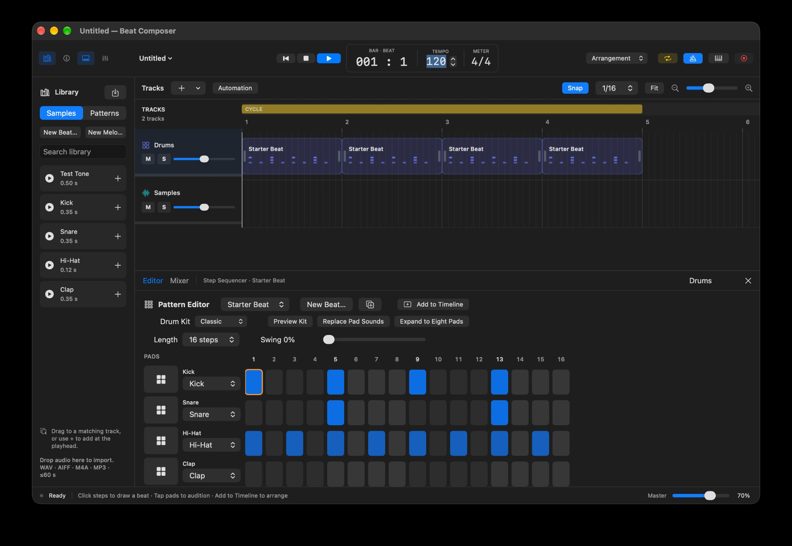

01 / INTERACTIVE ART / iOS
DigitalTactillity
나의 손짓을,
다른 시선으로.
손짓을 만드는 사람과
다시 감상하는 사람이 만나는 작품.
SELECTED WORK / 2026
내 움직임을 다시 보는 일.
내 자료를 이어서 쓰는 일.
두 개의 인터페이스에서 시작한 이야기.
프로젝트 과정 보고서
01 / INTERACTIVE ART / iOS
나의 손짓을,
다른 시선으로.
손짓을 만드는 사람과
다시 감상하는 사람이 만나는 작품.

궁금한 도구를 직접 만들고, 써 보며 다듬는 프로젝트.
macOS / IMAGE EDITING / 개발 중
고치고.
다시 고칠 수 있게.
레이어부터 GIF까지.
편집을 이어 가는 macOS 이미지 편집기.

macOS / MUSIC MAKING / 개발 중
비트를 만들고.
곡으로 이어 보고.
드럼·멜로디·샘플을 한 타임라인에.
만들고 고치고 믹싱하는 음악 작업 공간.

ABOUT THE WORK
두 작업을 하면서, 인터페이스가 내 행동과 자료를 다시 읽게 만든다는 점에 계속 눈이 갔다. 손짓은 AI의 비평을 거쳐 나에게 돌아왔고, PDF를 고른 순서는 다음 작업에서도 이어 쓸 수 있는 기록이 됐다.
두 앱은 코딩 에이전트와 함께 구현했다. 나는 무엇을 만들지 정하고, 터치 기록 방식과 비평의 범위, 폴더를 펼치는 화면과 PDF 묶기 방식을 다듬었다.